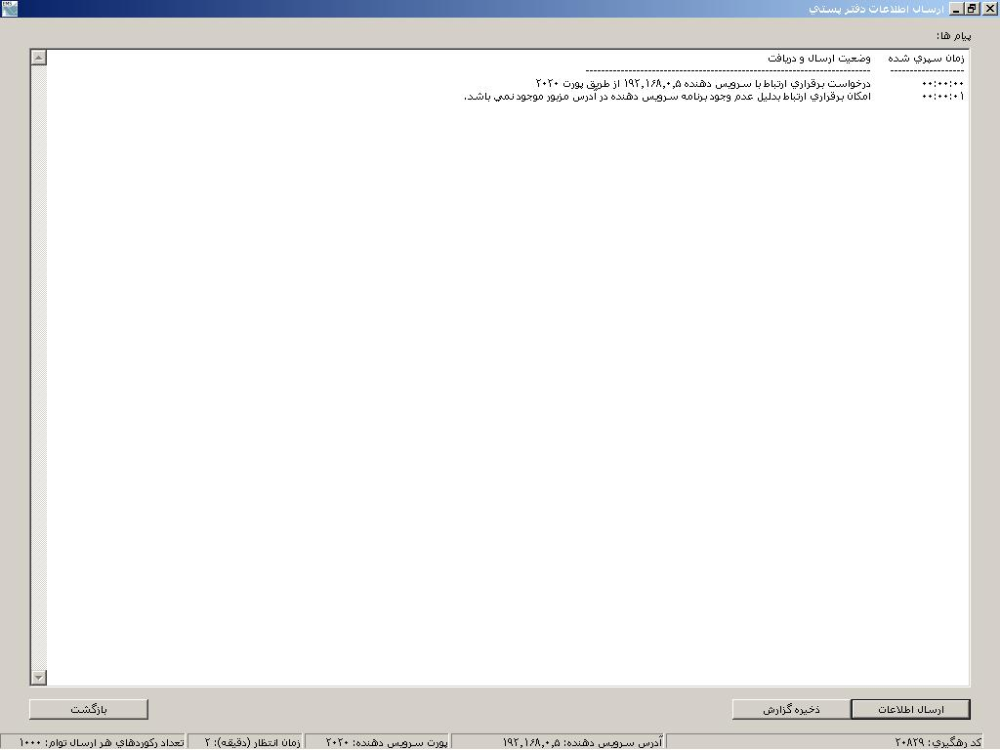

ÇÑÓÇá ÇØáÇÚÇÊ

ÇØáÇÚÇÊ Ï�ÔåÇí ÂãÇÏå ÔÏå ÈÑÇí ÇÑÓÇá
ÏÑÇíä İÑã ÇãßÇä ÇÑÓÇá Èå ãŞÕÏ ÑÇ ÎæÇåäÏ ÏÇÔÊ.
áÇÒã Èå
ÊĞßÑ ÇÓÊ ßå ÈÑÇí ÇäÌÇã ÚãáíÇÊ ÇÑÓÇá ÇØáÇÚÇÊ ÈÇíÏ íß DSN
ÈÇ äÇã POFFICEDB ÏÑ ODBC ÓÇÎÊå ÔæÏ.
ØÑíŞå ÓÇÎÊäPOFFICEDB Dsn:
ßäÊÑá
�Çäá æíäÏæÒ ÑÇ ÈÇÒ äãæÏå æ ÇÒ ŞÓãÊ
Administrative Tools �Òíäå (Data Sources (ODBC ÑÇ ÇäÊÎÇÈ ãí�äãÇííã. Ó�Ó ßáíÏ Add
ÑÇ ÒÏå æ Microsoft
Access Driver ÑÇ ÇäÊÎÇÈ äãæÏå æ äÇã dsn ÑÇ POFFICEDB æÇÑÏ ãí�äãÇííã. Ó�Ó ÈÇ Ïßãå select
ÈÇäß ÇØáÇÚÇÊ ÈÑäÇãå (TTPOFFICE.mdb) ÑÇ ÇÒ ãÓíÑ ãÑÈæØå
ÇäÊÎÇÈ ãí�äãÇííã.